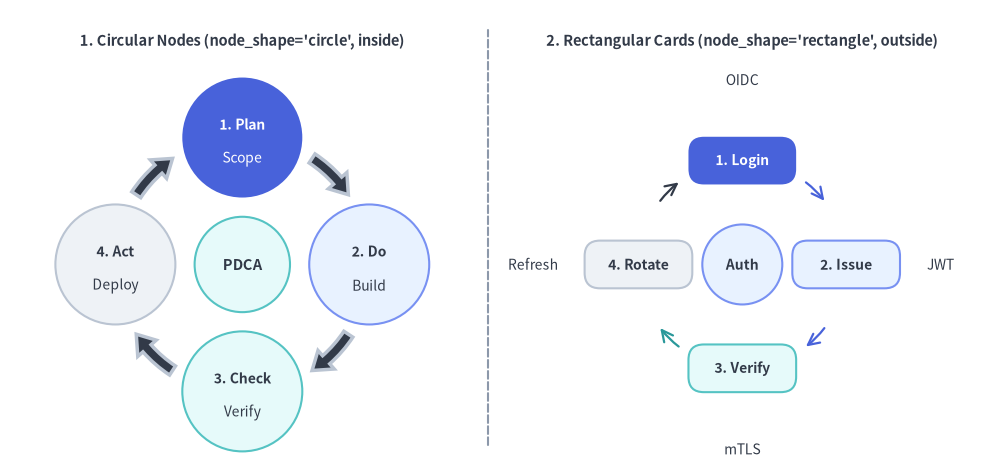
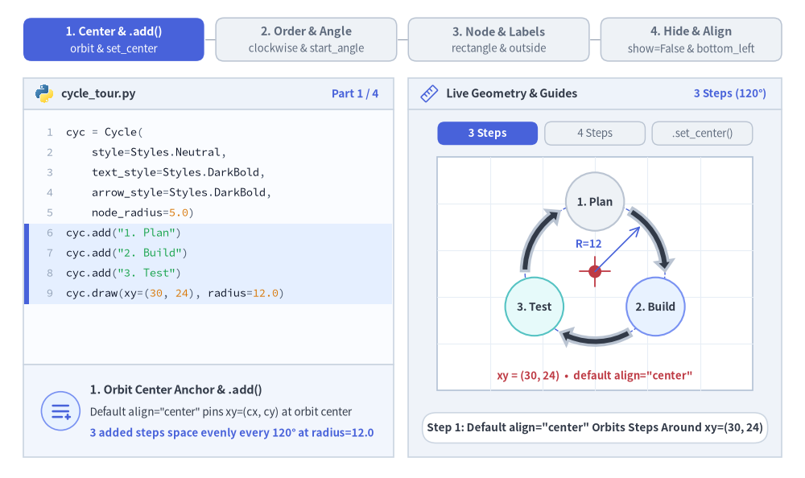
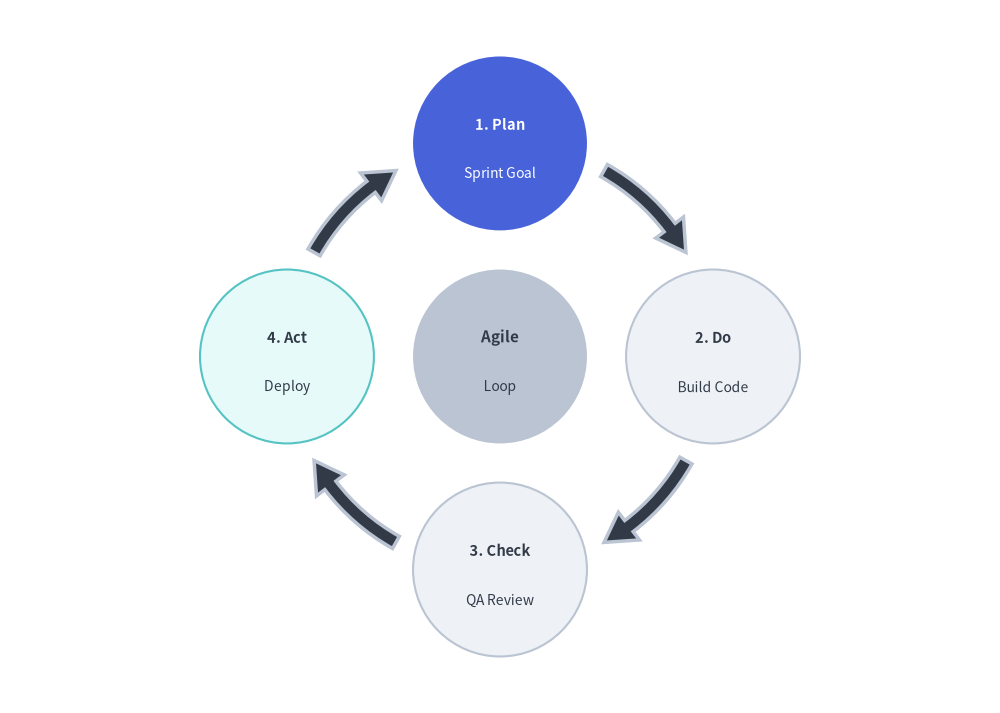
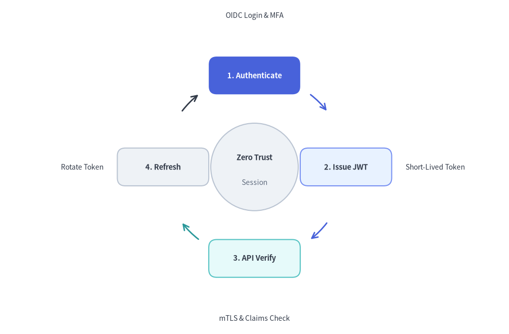

Cycle（サイクル図）
Cycle コンポーネントは、循環・反復するプロセス図や継続的なフィードバックループを描画します。
アジャイル／スクラムのイテレーション、PDCA の DevOps ライフサイクル、インシデント対応ループ、トークンリフレッシュ機構などの表現に最適です。

Source Code
from drawlib.canvas import save, setup
from drawlib.lines import line
from drawlib.smartarts import Cycle
from drawlib.styles import Styles
from drawlib.text import text
setup(width=130, height=62)
# Left Panel: Circular Node Orbit (node_shape="circle", description_placement="inside")
text((31.5, 56.5), "1. Circular Nodes (node_shape='circle', inside)", style=Styles.DarkBold.patch(text_size=10.5))
c_left = Cycle(
style=Styles.Neutral,
text_style=Styles.DarkBold.patch(text_size=10.0),
description_style=Styles.Dark.patch(text_size=10.0),
arrow_style=Styles.DarkBold,
node_shape="circle",
node_radius=7.8,
description_placement="inside",
arrow_type="arc",
arrow_width=1.4,
arrow_head_width=3.2,
arrow_color_mode="monochrome",
arrow_gap=1.8,
)
c_left.add(
"1. Plan",
description="Scope",
style=Styles.PrimaryFlat,
text_style=Styles.WhiteBold.patch(text_size=10.0),
description_style=Styles.White.patch(text_size=10.0),
)
c_left.add(
"2. Do",
description="Build",
style=Styles.PrimaryNeutral,
text_style=Styles.DarkBold.patch(text_size=10.0),
description_style=Styles.Dark.patch(text_size=10.0),
)
c_left.add(
"3. Check",
description="Verify",
style=Styles.SecondaryNeutral,
text_style=Styles.DarkBold.patch(text_size=10.0),
description_style=Styles.Dark.patch(text_size=10.0),
)
c_left.add(
"4. Act",
description="Deploy",
style=Styles.Neutral,
text_style=Styles.DarkBold.patch(text_size=10.0),
description_style=Styles.Dark.patch(text_size=10.0),
)
c_left.set_center(
"PDCA",
radius=6.2,
style=Styles.SecondaryNeutral,
text_style=Styles.DarkBold.patch(text_size=10.5),
)
c_left.draw(xy=(31.5, 27.5), radius=16.5)
# Center Divider
line((63.5, 4), (63.5, 58), style=Styles.MutedDashed)
# Right Panel: Rectangular Card Loop (node_shape="rectangle", description_placement="outside")
text((96.5, 56.5), "2. Rectangular Cards (node_shape='rectangle', outside)", style=Styles.DarkBold.patch(text_size=10.5))
c_right = Cycle(
style=Styles.Neutral,
text_style=Styles.DarkBold.patch(text_size=10.0),
description_style=Styles.Dark.patch(text_size=10.0),
node_shape="rectangle",
node_width=14.0,
node_height=6.2,
description_placement="outside",
arrow_type="line",
arrow_width=1.6,
arrow_color_mode="match_source",
arrow_gap=1.8,
)
c_right.add(
"1. Login",
description="OIDC",
style=Styles.PrimaryFlat,
text_style=Styles.WhiteBold.patch(text_size=10.0),
description_style=Styles.Dark.patch(text_size=10.0),
)
c_right.add(
"2. Issue",
description="JWT",
style=Styles.PrimaryNeutral,
text_style=Styles.DarkBold.patch(text_size=10.0),
description_style=Styles.Dark.patch(text_size=10.0, halign="left"),
arrow_style=Styles.PrimaryBold,
)
c_right.add(
"3. Verify",
description="mTLS",
style=Styles.SecondaryNeutral,
text_style=Styles.DarkBold.patch(text_size=10.0),
description_style=Styles.Dark.patch(text_size=10.0),
arrow_style=Styles.SecondaryBold,
)
c_right.add(
"4. Rotate",
description="Refresh",
style=Styles.Neutral,
text_style=Styles.DarkBold.patch(text_size=10.0),
description_style=Styles.Dark.patch(text_size=10.0, halign="right"),
arrow_style=Styles.DarkBold,
)
c_right.set_center(
"Auth",
radius=5.2,
style=Styles.PrimaryNeutral,
text_style=Styles.DarkBold.patch(text_size=10.0),
)
c_right.draw(xy=(96.5, 27.5), radius=13.5)
save()
1. 基本概念と基本的な使い方
Cycle は .add(...) で円周上のステップを等間隔に配置し、デフォルトでは軌道中心 xy=(cx, cy)（align="center"、任意の .set_center(...) 中央ハブ付き）を基準とし、align="bottom_left" 指定時は外接バウンディングボックスの左下角を基準にします。回転方向と開始角度（clockwise, start_angle）の制御、円形ノードと長方形カードおよび inside／outside 説明配置の切り替え、矢印の配色カスタマイズ、さらに他のステップの軌道角度を維持したまま .items[i] を非表示化する操作が可能です。

Source Code
from __future__ import annotations
import math
from drawlib.anim import Animation
from drawlib.canvas import save, setup
from drawlib.icons import code as code_icons
from drawlib.icons import phosphor
from drawlib.lines import line
from drawlib.shapes import circle, rectangle
from drawlib.smartarts import Cycle, SourceCode, SourceCodeStyles
from drawlib.styles import Styles
from drawlib.text import text
W, H = 138.0, 82.0
setup(width=W, height=H)
anim = Animation(fps=10.0, loop=0)
CODE_TEXT_SIZE = 10.0
PT_TO_CANVAS = W / 720.0
FONT_CANVAS = CODE_TEXT_SIZE * PT_TO_CANVAS
LINE_H = FONT_CANVAS * 1.8
PAD_Y = FONT_CANVAS * 1.2
CODE_STYLES = SourceCodeStyles.get("default", font_lang="en", text_size=CODE_TEXT_SIZE).patch(
box_style=Styles.Neutral.patch(shape_fill_color=(0, 0, 0, 0), shape_line_width=0),
)
PANE_HEADER = Styles.Neutral.patch(
shape_fill_color=(238, 243, 250),
shape_line_color=(203, 213, 225),
shape_line_width=1.2,
shape_r=0.0,
)
EDITOR_BODY = Styles.Neutral.patch(
shape_fill_color=(250, 252, 255),
shape_line_color=(203, 213, 225),
shape_line_width=1.2,
shape_r=0.0,
)
TAKEAWAY_BODY = Styles.Neutral.patch(
shape_fill_color=(242, 246, 253),
shape_line_color=(203, 213, 225),
shape_line_width=1.2,
shape_r=0.0,
)
STUDIO_BODY = Styles.Neutral.patch(
shape_fill_color=(239, 243, 249),
shape_line_color=(203, 213, 225),
shape_line_width=1.2,
shape_r=0.0,
)
PART_ITEMS = [
("1. Center & .add()", "orbit & set_center"),
("2. Order & Angle", "clockwise & start_angle"),
("3. Node & Labels", "rectangle & outside"),
("4. Hide & Align", "show=False & bottom_left"),
]
def draw_step_bar(active_part: int) -> None:
"""Draw top 4-part progress bar (active_part is 1..4)."""
pill_w = 31.0
pill_h = 7.4
gap = 2.0
start_x = 4.0 + pill_w / 2.0
cy = 75.2
for idx, (label, sublabel) in enumerate(PART_ITEMS, start=1):
cx = start_x + (idx - 1) * (pill_w + gap)
if idx > 1:
prev_cx = cx - (pill_w + gap)
line(
(prev_cx + pill_w / 2.0 + 0.2, cy),
(cx - pill_w / 2.0 - 0.2, cy),
style=Styles.PrimaryBold if idx <= active_part else Styles.MutedThin,
)
if idx == active_part:
st = Styles.PrimaryFlat.patch(shape_r=1.4)
tst = Styles.WhiteBold.patch(text_size=10.3)
sub_tst = Styles.White.patch(text_size=9.5)
elif idx < active_part:
st = Styles.PrimaryNeutral.patch(shape_r=1.4, shape_line_width=1.1)
tst = Styles.PrimaryBold.patch(text_size=10.3)
sub_tst = Styles.Primary.patch(text_size=9.5)
else:
st = Styles.Neutral.patch(shape_r=1.4, shape_line_width=1.1)
tst = Styles.MutedBold.patch(text_size=10.3)
sub_tst = Styles.Muted.patch(text_size=9.5)
rectangle((cx, cy), width=pill_w, height=pill_h, style=st)
text((cx, cy + 1.35), label, style=tst)
text((cx, cy - 1.55), sublabel, style=sub_tst)
def draw_left_pane(
active_part: int,
code_lines: list[str],
hl_range: tuple[int, int],
icon_fn: object,
summary_title: str,
summary_line1: str,
summary_line2: str,
) -> None:
"""Draw left Python code editor + bottom concept takeaway card."""
x0, w = 4.0, 63.5
cx = x0 + w / 2.0
top_y = 63.2
header_h = 5.4
editor_h = 43.8
takeaway_h = 15.8
rectangle((cx, top_y + header_h / 2.0), width=w, height=header_h, style=PANE_HEADER)
code_icons.python((x0 + 3.6, top_y + header_h / 2.0), width=3.4, style=Styles.Neutral)
text(
(x0 + 6.5, top_y + header_h / 2.0),
"cycle_tour.py",
style=Styles.DarkBold.patch(text_size=10.2, halign="left"),
)
text(
(x0 + w - 2.6, top_y + header_h / 2.0),
f"Part {active_part} / 4",
style=Styles.PrimaryBold.patch(text_size=9.8, halign="right"),
)
rectangle((cx, top_y - editor_h / 2.0), width=w, height=editor_h, style=EDITOR_BODY)
hl_start, hl_end = hl_range
hl_top = top_y - PAD_Y - hl_start * LINE_H
hl_bot = top_y - PAD_Y - (hl_end + 1) * LINE_H
hl_cy = (hl_top + hl_bot) / 2.0
hl_h = hl_top - hl_bot
rectangle(
(cx, hl_cy),
width=w - 0.6,
height=hl_h,
style=Styles.Neutral.patch(shape_fill_color=(229, 239, 255), shape_line_width=0),
)
rectangle(
(x0 + 0.55, hl_cy),
width=0.9,
height=hl_h,
style=Styles.PrimaryFlat.patch(shape_line_width=0),
)
SourceCode.draw(
xy=(x0, top_y),
width=w,
code="\n".join(code_lines),
styles=CODE_STYLES,
code_lang="python",
show_linenum=True,
align="top_left",
)
take_cy = 3.6 + takeaway_h / 2.0
rectangle((cx, take_cy), width=w, height=takeaway_h, style=TAKEAWAY_BODY)
circle(
(x0 + 6.4, take_cy),
radius=3.3,
style=Styles.PrimaryNeutral.patch(shape_line_width=1.2),
)
icon_fn((x0 + 6.4, take_cy), width=3.8, style=Styles.PrimaryBold) # type: ignore[operator]
text(
(x0 + 11.4, take_cy + 3.6),
summary_title,
style=Styles.DarkBold.patch(text_size=10.4, halign="left"),
)
text(
(x0 + 11.4, take_cy - 0.2),
summary_line1,
style=Styles.Dark.patch(text_size=9.7, halign="left"),
)
text(
(x0 + 11.4, take_cy - 3.8),
summary_line2,
style=Styles.PrimaryBold.patch(text_size=9.6, halign="left"),
)
def draw_geometry_studio(param_badge: str, footer_caption: str) -> tuple[float, float]:
"""Draw right geometry lab shell, inner 54x40 coordinate sheet, and footer."""
x0, w = 70.0, 64.0
cx = x0 + w / 2.0
top_y = 63.2
header_h = 5.4
body_h = 59.6
rectangle((cx, top_y + header_h / 2.0), width=w, height=header_h, style=PANE_HEADER)
phosphor.ruler((x0 + 3.6, top_y + header_h / 2.0), width=3.4, style=Styles.Primary)
text(
(x0 + 6.5, top_y + header_h / 2.0),
"Live Geometry & Guides",
style=Styles.DarkBold.patch(text_size=10.2, halign="left"),
)
text(
(x0 + w - 2.6, top_y + header_h / 2.0),
param_badge,
style=Styles.PrimaryBold.patch(text_size=9.6, halign="right"),
)
rectangle((cx, 3.6 + body_h / 2.0), width=w, height=body_h, style=STUDIO_BODY)
sheet_cx, sheet_cy = cx, 35.0
sheet_w, sheet_h = 54.0, 40.0
sx0, sy0 = sheet_cx - sheet_w / 2.0, sheet_cy - sheet_h / 2.0
rectangle(
(sheet_cx, sheet_cy),
width=sheet_w,
height=sheet_h,
style=Styles.Neutral.patch(
shape_fill_color=(255, 255, 255),
shape_line_color=(180, 194, 214),
shape_line_width=1.2,
),
)
g_st = Styles.MutedThin.patch(line_color=(232, 238, 246), line_width=0.8)
for gx in range(1, 6):
vx = sx0 + gx * (sheet_w / 6.0)
line((vx, sy0), (vx, sy0 + sheet_h), style=g_st)
for gy in range(1, 5):
vy = sy0 + gy * (sheet_h / 5.0)
line((sx0, vy), (sx0 + sheet_w, vy), style=g_st)
rectangle(
(cx, 8.6),
width=59.2,
height=5.2,
style=Styles.Neutral.patch(
shape_fill_color=(255, 255, 255),
shape_line_color=(203, 213, 225),
shape_line_width=1.1,
shape_r=2.4,
),
text=footer_caption,
text_style=Styles.DarkBold.patch(text_size=9.8),
)
return sheet_cx, sheet_cy
def draw_sub_pills(scx: float, labels: list[str], active_idx: int) -> None:
"""Draw 3-step tracker pills above the studio coordinate sheet."""
pw, ph, pgap = 17.2, 4.0, 1.2
p_start = scx - (3 * pw + 2 * pgap) / 2.0 + pw / 2.0
for idx, lbl in enumerate(labels):
px = p_start + idx * (pw + pgap)
if idx == active_idx:
pst = Styles.PrimaryFlat.patch(shape_r=1.2)
ptst = Styles.WhiteBold.patch(text_size=9.5)
elif idx < active_idx:
pst = Styles.PrimaryNeutral.patch(shape_r=1.2, shape_line_width=1.0)
ptst = Styles.PrimaryBold.patch(text_size=9.5)
else:
pst = Styles.Neutral.patch(shape_r=1.2, shape_line_width=1.0)
ptst = Styles.Muted.patch(text_size=9.5)
rectangle((px, 59.1), width=pw, height=ph, style=pst, text=lbl, text_style=ptst)
TITLE_DARK = Styles.DarkBold.patch(text_size=9.8)
DESC_DARK = Styles.Dark.patch(text_size=9.5)
TITLE_WHITE = Styles.WhiteBold.patch(text_size=9.8)
DESC_WHITE = Styles.White.patch(text_size=9.5)
# =========================================================================
# Part 1: Center & .add() — Default Orbit Center & .set_center() Hub
# =========================================================================
PART1_STATES = [
(
3,
False,
3.3,
[
"cyc = Cycle(",
" style=Styles.Neutral,",
" text_style=Styles.DarkBold,",
" arrow_style=Styles.DarkBold,",
" node_radius=5.0)",
'cyc.add("1. Plan")',
'cyc.add("2. Build")',
'cyc.add("3. Test")',
"cyc.draw(xy=(30, 24), radius=12.0)",
],
(5, 8),
"3 Steps (120°)",
'Step 1: Default align="center" Orbits Steps Around xy=(30, 24)',
"1. Orbit Center Anchor & .add()",
'Default align="center" pins xy=(cx, cy) at orbit center',
"3 added steps space evenly every 120° at radius=12.0",
),
(
4,
False,
3.3,
[
"cyc = Cycle(",
" style=Styles.Neutral,",
" ..., node_radius=5.0)",
'cyc.add("1. Plan")',
'cyc.add("2. Build")',
'cyc.add("3. Test")',
'cyc.add("4. Ship")',
"# Auto-spaces 4 steps at 90 deg",
"cyc.draw(",
' (30, 24), 12.0, "center")',
],
(6, 9),
"4 Steps (90°)",
"Step 2: Appending 4th Node Re-Spaces Orbit to 90° Intervals",
"2. Automatic Equi-Angular Reflow",
"Appending a 4th step re-spaces all nodes to 360° / 4",
"Curved block arrows adapt arc span automatically",
),
(
4,
True,
3.5,
[
"cyc = Cycle(",
" style=Styles.Neutral, ...)",
'cyc.add("1. Plan") # .. 4. Ship',
"",
"cyc.set_center(",
' "Core",',
' description="Loop",',
" radius=4.6,",
" style=Styles.PrimaryFlat,",
" text_style=Styles.WhiteBold)",
"cyc.draw(xy=(30, 24), radius=12.0)",
],
(4, 9),
".set_center()",
"Step 3: .set_center() Places a Focal Hub Right at Orbit Center",
"3. Central Hub (.set_center())",
"Renders an optional central circle at orbit center xy",
"Great for naming the shared lifecycle or state loop",
),
]
for p1_idx, (n_nodes, has_hub, dur, code_p1, hl_rng, badge_txt, foot_txt, s_t, s_1, s_2) in enumerate(PART1_STATES):
with anim.frame(duration=dur):
draw_step_bar(1)
draw_left_pane(1, code_p1, hl_rng, phosphor.list_plus, s_t, s_1, s_2)
scx, scy = draw_geometry_studio(badge_txt, foot_txt)
draw_sub_pills(scx, ["3 Steps", "4 Steps", ".set_center()"], p1_idx)
ocx, ocy, orb_r = scx, 35.4, 12.0
circle(
(ocx, ocy),
radius=orb_r,
style=Styles.PrimaryDashed.patch(shape_fill_color=(0, 0, 0, 0), shape_line_width=1.0),
)
cyc = Cycle(
style=Styles.Neutral,
text_style=TITLE_DARK,
description_style=DESC_DARK,
arrow_style=Styles.DarkBold,
node_radius=5.0,
arrow_width=1.3,
arrow_head_width=2.9,
arrow_color_mode="monochrome",
arrow_gap=1.4,
)
cyc.add("1. Plan", style=Styles.Neutral)
cyc.add("2. Build", style=Styles.PrimaryNeutral)
cyc.add("3. Test", style=Styles.SecondaryNeutral)
if n_nodes >= 4:
cyc.add("4. Ship", style=Styles.Neutral)
if has_hub:
cyc.set_center(
"Core",
description="Loop",
radius=4.6,
style=Styles.PrimaryFlat,
text_style=TITLE_WHITE,
description_style=DESC_WHITE,
)
cyc.draw(xy=(ocx, ocy), radius=orb_r)
if not has_hub:
line((ocx - 2.6, ocy), (ocx + 2.6, ocy), style=Styles.DangerBold.patch(line_width=1.3))
line((ocx, ocy - 2.6), (ocx, ocy + 2.6), style=Styles.DangerBold.patch(line_width=1.3))
circle((ocx, ocy), radius=1.1, style=Styles.DangerFlat)
ang_r = math.radians(45.0)
line(
(ocx, ocy),
(ocx + (orb_r - 1.0) * math.cos(ang_r), ocy + (orb_r - 1.0) * math.sin(ang_r)),
arrow_head="->",
style=Styles.PrimaryBold.patch(line_width=1.2),
)
text(
(ocx + 1.2, ocy + 4.8),
"R=12",
style=Styles.PrimaryBold.patch(text_size=9.5, halign="right"),
)
if p1_idx == 0:
text(
(ocx, 17.5),
'xy = (30, 24) • default align="center"',
style=Styles.DangerBold.patch(text_size=9.5),
)
else:
text(
(76.8, 51.8),
"360° / 4 = 90°",
style=Styles.PrimaryBold.patch(text_size=9.5, halign="left"),
)
else:
line((ocx - 3.3, ocy - 3.3), (86.5, 20.5), style=Styles.PrimaryBold.patch(line_width=1.1))
text(
(76.8, 18.2),
"hub at xy=(30, 24)",
style=Styles.PrimaryBold.patch(text_size=9.5, halign="left"),
)
# =========================================================================
# Part 2: Order & Angle — clockwise & start_angle
# =========================================================================
PART2_STATES = [
(
True,
90.0,
3.3,
"90° CW",
"start_angle=90.0, clockwise=True: Top 12-O'Clock Start",
"Default 12-O'Clock Clockwise",
"start_angle=90.0 places Step 1 at top (12 o'clock)",
"clockwise=True advances 90° -> 0° -> 270° -> 180°",
),
(
True,
180.0,
3.3,
"180° CW",
"start_angle=180.0, clockwise=True: Left 9-O'Clock Start",
"Rotated Start Angle (start_angle=180.0)",
"Shifts Step 1 to 180° (left) while keeping CW flow",
"Any degree angle (0°=right, 90°=top, 180°=left) works",
),
(
False,
90.0,
3.4,
"90° CCW",
"clockwise=False: Reverses Orbit Counter-Clockwise",
"Counter-Clockwise Orbit (clockwise=False)",
"Reverses node progression (90° -> 180° -> 270° -> 0°)",
"Flips all curved connector arrowheads automatically",
),
]
for p2_idx, (cw_flag, st_ang, dur, badge_txt, foot_txt, s_t, s_1, s_2) in enumerate(PART2_STATES):
code_p2 = [
"cyc = Cycle(",
" style=Styles.Neutral,",
" text_style=Styles.DarkBold,",
" arrow_style=Styles.DarkBold,",
f" clockwise={cw_flag},",
f" start_angle={st_ang},",
" node_radius=5.0)",
'cyc.add("1. Plan",',
" style=Styles.PrimaryFlat)",
'cyc.add("2. Do") # + Check, Act',
"cyc.draw(xy=(30, 24), radius=12.0)",
]
with anim.frame(duration=dur):
draw_step_bar(2)
draw_left_pane(2, code_p2, (4, 5), phosphor.arrows_clockwise, s_t, s_1, s_2)
scx, scy = draw_geometry_studio(badge_txt, foot_txt)
draw_sub_pills(scx, ["90° CW", "180° CW", "90° CCW"], p2_idx)
ocx, ocy, orb_r = scx, 35.2, 12.0
cyc = Cycle(
style=Styles.Neutral,
text_style=TITLE_DARK,
arrow_style=Styles.DarkBold,
clockwise=cw_flag,
start_angle=st_ang,
node_radius=5.0,
arrow_width=1.3,
arrow_head_width=2.9,
arrow_color_mode="monochrome",
arrow_gap=1.4,
)
cyc.add("1. Plan", style=Styles.PrimaryFlat, text_style=TITLE_WHITE)
cyc.add("2. Do", style=Styles.PrimaryNeutral)
cyc.add("3. Check", style=Styles.SecondaryNeutral)
cyc.add("4. Act", style=Styles.Neutral)
cyc.draw(xy=(ocx, ocy), radius=orb_r)
rad_st = math.radians(st_ang)
line(
(ocx, ocy),
(ocx + 6.4 * math.cos(rad_st), ocy + 6.4 * math.sin(rad_st)),
arrow_head="->",
style=Styles.DangerBold.patch(line_width=1.5),
)
circle((ocx, ocy), radius=0.95, style=Styles.DangerFlat)
text(
(ocx, ocy - 3.0 if st_ang == 90.0 else ocy + 3.0),
"CW" if cw_flag else "CCW",
style=(Styles.PrimaryBold if cw_flag else Styles.DangerBold).patch(text_size=10.0),
)
text(
(76.8, 51.8),
f"start = {int(st_ang)}°",
style=Styles.DangerBold.patch(text_size=9.5, halign="left"),
)
if not cw_flag:
text(
(76.8, 18.0),
"2. Do moves to 180°",
style=Styles.DangerBold.patch(text_size=9.5, halign="left"),
)
# =========================================================================
# Part 3: Node & Labels — circle vs. rectangle & outside + line arrows
# =========================================================================
PART3_STATES = [
(
"circle_in",
3.3,
[
"cyc = Cycle(",
" style=Styles.Neutral,",
" text_style=Styles.DarkBold,",
" description_style=Styles.Dark,",
' node_shape="circle",',
" node_radius=5.2,",
' description_placement="inside"',
")",
'cyc.add("Plan", description="RFC")',
'cyc.add("Build", ...) # + 2 more',
"cyc.draw(xy=(30, 24), radius=11.8)",
],
(4, 6),
'"circle" + inside',
'node_shape="circle": Stacks Title & Description Inside',
'Circular Nodes (node_shape="circle")',
"Stacks title & description inside node_radius=5.2",
'Default arrow_type="arc" draws curved block arrows',
),
(
"rect_in",
3.3,
[
"cyc = Cycle(",
" style=Styles.Neutral,",
" text_style=Styles.DarkBold,",
" description_style=Styles.Dark,",
' node_shape="rectangle",',
" node_width=11.6,",
" node_height=6.0,",
")",
'cyc.add("Plan", description="RFC")',
'cyc.add("Build", ...) # + 2 more',
"cyc.draw(xy=(30, 24), radius=12.0)",
],
(4, 6),
'"rectangle"',
'node_shape="rectangle": Cards Sized by width & height',
'Rectangular Cards (node_shape="rectangle")',
"Sizes rounded step cards via node_width & node_height",
"Great for multi-word service or auth state labels",
),
(
"rect_out",
3.5,
[
"cyc = Cycle(",
" style=Styles.Neutral, ...,",
' node_shape="rectangle",',
" node_width=9.6,",
" node_height=4.8,",
" description_placement=(",
' "outside"),',
' arrow_type="line")',
'cyc.add("Plan", description="RFC")',
'cyc.add("Build", ...) # + 2 more',
"cyc.draw(xy=(30, 24), radius=9.5)",
],
(5, 7),
'"outside" + line',
'description_placement="outside" & arrow_type="line"',
'Outside Labels & Line Arrows ("outside")',
"Radiates descriptions outward along each node angle",
'Pair with arrow_type="line" and compact radius=9.5',
),
]
for p3_idx, (n_mode, dur, code_p3, hl_rng, badge_txt, foot_txt, s_t, s_1, s_2) in enumerate(PART3_STATES):
with anim.frame(duration=dur):
draw_step_bar(3)
draw_left_pane(3, code_p3, hl_rng, phosphor.squares_four, s_t, s_1, s_2)
scx, scy = draw_geometry_studio(badge_txt, foot_txt)
draw_sub_pills(scx, ['"circle" in', '"rectangle"', '"outside"+line'], p3_idx)
ocx, ocy = scx, 35.0
if n_mode == "circle_in":
cyc = Cycle(
style=Styles.Neutral,
text_style=TITLE_DARK,
description_style=DESC_DARK,
arrow_style=Styles.DarkBold,
node_shape="circle",
node_radius=5.2,
description_placement="inside",
arrow_type="arc",
arrow_width=1.3,
arrow_head_width=2.8,
arrow_color_mode="monochrome",
arrow_gap=1.3,
)
cyc.add("Plan", description="RFC", style=Styles.PrimaryFlat, text_style=TITLE_WHITE, description_style=DESC_WHITE)
cyc.add("Build", description="Code", style=Styles.PrimaryNeutral)
cyc.add("Test", description="QA", style=Styles.SecondaryNeutral)
cyc.add("Ship", description="Prod", style=Styles.Neutral)
cyc.draw(xy=(ocx, ocy), radius=11.8)
text((76.8, 51.8), "inside node", style=Styles.PrimaryBold.patch(text_size=9.5, halign="left"))
elif n_mode == "rect_in":
cyc = Cycle(
style=Styles.Neutral,
text_style=TITLE_DARK,
description_style=DESC_DARK,
arrow_style=Styles.DarkBold,
node_shape="rectangle",
node_width=11.6,
node_height=6.0,
description_placement="inside",
arrow_type="arc",
arrow_width=1.2,
arrow_head_width=2.6,
arrow_color_mode="monochrome",
arrow_gap=1.1,
)
cyc.add("Plan", description="RFC", style=Styles.PrimaryFlat, text_style=TITLE_WHITE, description_style=DESC_WHITE)
cyc.add("Build", description="Code", style=Styles.PrimaryNeutral)
cyc.add("Test", description="QA", style=Styles.SecondaryNeutral)
cyc.add("Ship", description="Prod", style=Styles.Neutral)
cyc.draw(xy=(ocx, ocy - 0.6), radius=12.0)
top_ry = (ocy - 0.6) + 12.0 + 3.0
line((ocx - 5.8, top_ry + 1.4), (ocx + 5.8, top_ry + 1.4), arrow_head="<->", style=Styles.PrimaryBold.patch(line_width=1.2))
text((ocx, top_ry + 3.4), "11.6 × 6.0", style=Styles.PrimaryBold.patch(text_size=9.5))
else:
cyc = Cycle(
style=Styles.Neutral,
text_style=TITLE_DARK,
description_style=DESC_DARK,
arrow_style=Styles.DarkBold,
node_shape="rectangle",
node_width=9.6,
node_height=4.8,
description_placement="outside",
arrow_type="line",
arrow_width=1.5,
arrow_color_mode="monochrome",
arrow_gap=1.1,
)
cyc.add("Plan", description="RFC", style=Styles.PrimaryFlat, text_style=TITLE_WHITE, description_style=DESC_DARK)
cyc.add("Build", description="Code", style=Styles.PrimaryNeutral, description_style=DESC_DARK.patch(halign="left"))
cyc.add("Test", description="QA", style=Styles.SecondaryNeutral, description_style=DESC_DARK)
cyc.add("Ship", description="Prod", style=Styles.Neutral, description_style=DESC_DARK.patch(halign="right"))
cyc.draw(xy=(ocx, ocy), radius=9.5)
text((ocx, ocy), "R = 9.5", style=Styles.PrimaryBold.patch(text_size=9.5))
text((76.8, 51.8), "outside labels", style=Styles.PrimaryBold.patch(text_size=9.5, halign="left"))
# =========================================================================
# Part 4: Hide & Align — match_source, .show=False & align="bottom_left"
# =========================================================================
PART4_STATES = [
(
"match_src",
3.3,
[
"cyc = Cycle(",
" style=Styles.Neutral, ...,",
" arrow_color_mode=(",
' "match_source"))',
'cyc.add("1. Plan",',
" style=Styles.PrimaryFlat)",
'cyc.add("2. Do",',
" style=Styles.Muted)",
's3 = cyc.add("3. Check")',
"s3.arrow_style = Styles.DarkBold",
"cyc.draw(xy=(30, 24), radius=11.5)",
],
(2, 3),
'"match_source"',
'arrow_color_mode="match_source": Source-Colored Arcs',
'Source-Matched Arrows ("match_source")',
"Each arrow adopts its source node fill color by default",
"Override individual steps via item.arrow_style",
),
(
"hide_step",
3.4,
[
"cyc = Cycle(",
" style=Styles.Neutral, ...)",
'cyc.add("1. Plan", ...)',
'cyc.add("2. Do", ...)',
'cyc.add("3. Check")',
'cyc.add("4. Act")',
"# Hide step; orbit angles stay!",
"cyc.items[1].show = False",
"",
"cyc.draw(xy=(30, 24), radius=11.5)",
],
(6, 7),
"items[1].show=False",
"items[1].show = False: Hides Step & Adjacent Arrows",
"Slot-Preserving Visibility (.show = False)",
"Hides items[1] and its incoming/outgoing arrows",
"Remaining 3 steps hold their exact 90° orbit slots",
),
(
"bottom_left",
3.6,
[
"cyc = Cycle(",
" style=Styles.Neutral, ...,",
" node_radius=4.6)",
'cyc.add("1. Plan", ...)',
'cyc.add("2. Do") # + Check, Act',
"",
"# Pin outer bottom-left corner",
"cyc.draw(",
" xy=(12, 16), radius=11.5,",
' align="bottom_left")',
],
(7, 9),
'align="bottom_left"',
'align="bottom_left": Pins Outer Corner at xy=(x, y)',
'Bottom-Left Anchor (align="bottom_left")',
"Offsets orbit center by radius + node_half + margin",
"Ideal when aligning cycles to grid margins & cards",
),
]
for p4_idx, (p4_mode, dur, code_p4, hl_rng, badge_txt, foot_txt, s_t, s_1, s_2) in enumerate(PART4_STATES):
with anim.frame(duration=dur):
draw_step_bar(4)
draw_left_pane(4, code_p4, hl_rng, phosphor.sliders_horizontal, s_t, s_1, s_2)
scx, scy = draw_geometry_studio(badge_txt, foot_txt)
draw_sub_pills(scx, ['"match_source"', ".show = False", '"bottom_left"'], p4_idx)
if p4_mode in ("match_src", "hide_step"):
ocx, ocy, orb_r = scx, 35.2, 11.5
cyc = Cycle(
style=Styles.Neutral,
text_style=TITLE_DARK,
node_radius=4.8,
arrow_width=1.4,
arrow_head_width=3.0,
arrow_color_mode="match_source",
arrow_gap=1.4,
)
cyc.add("1. Plan", style=Styles.PrimaryFlat, text_style=TITLE_WHITE)
cyc.add("2. Do", style=Styles.Muted, text_style=TITLE_DARK)
cyc.add(
"3. Check",
style=Styles.SecondaryNeutral,
arrow_style=Styles.SecondaryFlat.patch(shape_line_width=0),
)
cyc.add(
"4. Act",
style=Styles.Neutral,
arrow_style=Styles.DarkBold.patch(shape_line_width=0),
)
if p4_mode == "hide_step":
cyc.items[1].show = False
cyc.draw(xy=(ocx, ocy), radius=orb_r)
if p4_mode == "match_src":
text(
(127.2, 51.8),
"source-colored arc",
style=Styles.PrimaryBold.patch(text_size=9.5, halign="right"),
)
else:
gx = ocx + orb_r
circle(
(gx, ocy),
radius=4.8,
style=Styles.MutedDashed.patch(
shape_fill_color=(248, 250, 252),
shape_line_color=(148, 163, 184),
shape_line_width=1.2,
),
)
text((gx, ocy), "slot\nkept", style=Styles.MutedBold.patch(text_size=9.5))
text(
(76.8, 18.2),
"90° slots kept",
style=Styles.PrimaryBold.patch(text_size=9.5, halign="left"),
)
else:
bx0, by0, orb_r, nr = 88.0, 17.2, 11.5, 4.6
box_span = 2.0 * (orb_r + nr + 2.0)
cyc = Cycle(
style=Styles.Neutral,
text_style=TITLE_DARK,
arrow_style=Styles.DarkBold,
node_radius=nr,
arrow_width=1.3,
arrow_head_width=2.8,
arrow_color_mode="monochrome",
arrow_gap=1.3,
)
cyc.add("1. Plan", style=Styles.PrimaryFlat, text_style=TITLE_WHITE)
cyc.add("2. Do", style=Styles.PrimaryNeutral)
cyc.add("3. Check", style=Styles.SecondaryNeutral)
cyc.add("4. Act", style=Styles.Neutral)
cyc.draw(xy=(bx0, by0), radius=orb_r, align="bottom_left")
rectangle(
(bx0 + box_span / 2.0, by0 + box_span / 2.0),
width=box_span,
height=box_span,
style=Styles.PrimaryDashed.patch(shape_fill_color=(0, 0, 0, 0), shape_line_width=1.1),
)
line((bx0, by0), (bx0, by0 + 11.5), arrow_head="->", style=Styles.DangerBold.patch(line_width=1.4))
text((bx0 - 1.4, by0 + 11.5), "+Y", style=Styles.DangerBold.patch(text_size=9.5, halign="right"))
line((bx0, by0), (bx0 + 11.5, by0), arrow_head="->", style=Styles.DangerBold.patch(line_width=1.4))
text((bx0 + 12.2, by0 + 1.8), "+X", style=Styles.DangerBold.patch(text_size=9.5, halign="left"))
circle((bx0, by0), radius=1.2, style=Styles.DangerFlat)
text((76.2, 20.8), "xy=(12, 16)", style=Styles.DangerBold.patch(text_size=9.5, halign="left"))
text((76.2, 17.5), "bottom-left", style=Styles.DangerBold.patch(text_size=9.5, halign="left"))
save()
- 軌道中心アンカーと中央ハブ (
xy,align="center",.set_center()):xy=(cx, cy)（デフォルトalign="center"）の周囲に.add(text, description=..., style=...)で円周ステップを追加し、必要に応じて.set_center(...)で中央ハブ円を配置します。 - 回転方向と開始角度 (
clockwise,start_angle): デフォルトのclockwise=True, start_angle=90.0では第 1 ステップを 12 時方向に配置して時計回りに進みます。start_angle（例:180.0）の変更や、clockwise=Falseによる反時計回りループへの切り替えが可能です。 - ノード形状・ラベル配置・接続矢印 (
node_shape,description_placement,arrow_type):"circle"（node_radius）または"rectangle"（node_width,node_height）を選択し、説明文をノード内部に重ねる"inside"または外周へ放射配置する"outside"を切り替え、"arc"ブロック矢印または"line"ストローク矢印で接続できます。 - 矢印配色・表示制御・左下アンカー配置 (
arrow_color_mode,.show,align="bottom_left"):"match_source"と"monochrome"の矢印配色を切り替えたり、cycle.items[i].show = Falseで他のステップの角度を保ったまま非表示にしたり、align="bottom_left"で外接矩形の左下角を基準に配置したりできます。
2. クイックサンプル: アジャイル開発サイクル
from drawlib.canvas import setup
from drawlib.smartarts import Cycle
from drawlib.styles import Styles
setup(width=115, height=82)
cycle = Cycle(
style=Styles.Neutral,
text_style=Styles.DarkBold.patch(text_size=10.5),
description_style=Styles.Dark.patch(text_size=10.0),
arrow_style=Styles.DarkBold,
clockwise=True,
start_angle=90.0,
node_shape="circle",
node_radius=10.0,
arrow_type="arc",
arrow_width=1.6,
arrow_head_width=4.0,
arrow_color_mode="monochrome",
description_placement="inside",
)
cycle.add(
"1. Plan",
description="Sprint Goal",
style=Styles.PrimaryFlat,
text_style=Styles.WhiteBold.patch(text_size=10.5),
description_style=Styles.White.patch(text_size=10.0),
)
cycle.add(
"2. Do",
description="Build Code",
text_style=Styles.DarkBold.patch(text_size=10.5),
description_style=Styles.Dark.patch(text_size=10.0),
)
cycle.add(
"3. Check",
description="QA Review",
text_style=Styles.DarkBold.patch(text_size=10.5),
description_style=Styles.Dark.patch(text_size=10.0),
)
cycle.add(
"4. Act",
description="Deploy",
style=Styles.SecondaryNeutral,
text_style=Styles.DarkBold.patch(text_size=10.5),
description_style=Styles.Dark.patch(text_size=10.0),
)
cycle.set_center(
text="Agile",
description="Loop",
radius=10.0,
style=Styles.MutedFlat,
text_style=Styles.DarkBold.patch(text_size=11.0),
description_style=Styles.Dark.patch(text_size=10.0),
)
cycle.draw(xy=(57.5, 41.0), radius=24.5)

3. 長方形ノード・外周説明ラベル・ライン矢印の組み合わせ
node_shape="rectangle"（node_width, node_height 併用）、description_placement="outside"、arrow_type="line"、arrow_color_mode="match_source" を組み合わせると、角丸長方形のカードを始点ステージの色に合わせた細い円弧矢印で結び、説明ラベルを外周へ放射状に配置したアーキテクチャ向けの状態ループ図を構築できます。
from drawlib.canvas import save, setup
from drawlib.smartarts import Cycle
from drawlib.styles import Styles
setup(width=128, height=84)
auth_cycle = Cycle(
style=Styles.Neutral,
text_style=Styles.DarkBold.patch(text_size=10.5),
description_style=Styles.Dark.patch(text_size=10.0),
clockwise=True,
start_angle=90.0,
node_shape="rectangle",
node_width=23.0,
node_height=9.5,
description_placement="outside",
arrow_type="line",
arrow_width=2.0,
arrow_color_mode="match_source",
arrow_gap=3.0,
)
# Top (90 deg) - Hero focal step
auth_cycle.add(
"1. Authenticate",
description="OIDC Login & MFA",
style=Styles.PrimaryFlat,
text_style=Styles.WhiteBold.patch(text_size=10.5),
description_style=Styles.Dark.patch(text_size=10.0),
)
# Right (0 deg) - left-align outside description so it extends cleanly rightward
auth_cycle.add(
"2. Issue JWT",
description="Short-Lived Token",
style=Styles.PrimaryNeutral,
text_style=Styles.DarkBold.patch(text_size=10.5),
description_style=Styles.Dark.patch(text_size=10.0, halign="left"),
arrow_style=Styles.PrimaryBold,
)
# Bottom (270 deg)
auth_cycle.add(
"3. API Verify",
description="mTLS & Claims Check",
style=Styles.SecondaryNeutral,
text_style=Styles.DarkBold.patch(text_size=10.5),
description_style=Styles.Dark.patch(text_size=10.0),
arrow_style=Styles.SecondaryBold,
)
# Left (180 deg) - right-align outside description so it extends cleanly leftward
rotate_step = auth_cycle.add(
"4. Refresh",
description="Rotate Token",
style=Styles.Neutral,
text_style=Styles.DarkBold.patch(text_size=10.5),
description_style=Styles.Dark.patch(text_size=10.0, halign="right"),
)
# Customize outgoing arrow style on the neutral step via CycleItem mutation
rotate_step.arrow_style = Styles.DarkBold
auth_cycle.set_center(
text="Zero Trust",
description="Session",
radius=11.0,
style=Styles.Neutral,
text_style=Styles.DarkBold.patch(text_size=10.5),
description_style=Styles.Muted.patch(text_size=10.0),
)
auth_cycle.draw(xy=(64, 42), radius=23.0, align="center")
save()

4. 幾何構造と座標メカニクス
-
アンカーモード (
align="center"vs.align="bottom_left"):align="center"（デフォルト）:xy=(cx, cy)は軌道円の正確な中心ハブ座標を指定します。align="bottom_left":xy=(x, y)はサイクル全体の外接バウンディングボックスの左下角を指定します（軌道中心はradius + node_half_extent + marginだけ自動オフセットされます）。
-
等角度配置: 各ステップは半径
Rの軌道円周上に等角度で配置されます（clockwise=Trueのときは-、clockwise=Falseのときは+）。angle_i = (start_angle -/+ i * (360 / N)) mod 360 -
ノード形状とサイズ指定 (
node_shape,node_radius,node_width,node_height):"circle"（デフォルト）:node_radius（デフォルト8.0）でサイズが決まる円形ステップノード。"rectangle":node_widthとnode_height（デフォルトは18.0と10.0、styleで上書きしない限りデフォルト角丸半径shape_r=2.0）でサイズが決まる角丸長方形カード。"none": 背景図形を持たないフローティングテキストラベル。
-
説明文の配置 (
description_placement):"inside"（デフォルト）: タイトルと説明文を上下に並べてノード境界の内側に描画します。"outside": タイトルをノード中央に描画し、説明文を各ノードの軌道角度に沿って外周側へ放射状に配置します。
-
接続矢印の種類と配色 (
arrow_type,arrow_color_mode):arrow_type:"arc"（デフォルト、曲線ブロック矢印）、"line"（矢印付きの曲線ストローク）、または"none"。arrow_color_mode:"match_source"（デフォルト）: 各接続矢印は始点ステップのshape_fill_colorを引き継ぎます（arrow_styleで個別上書きした場合を除く）。"match_target": 各接続矢印は終点ステップのshape_fill_colorに合わせます。"monochrome": すべての接続矢印にarrow_styleを使用します（Cycleまたは各アイテムにarrow_styleの設定が必要です）。
5. API リファレンス
コンストラクタ (Cycle)
Cycle(
*,
style: Style,
text_style: Style,
description_style: Style | None = None,
arrow_style: Style | None = None,
clockwise: bool = True,
start_angle: float = 90.0,
node_shape: Literal["circle", "rectangle", "none"] = "circle",
node_radius: float = 8.0,
node_width: float = 18.0,
node_height: float = 10.0,
description_placement: Literal["inside", "outside"] = "inside",
arrow_type: Literal["arc", "line", "none"] = "arc",
arrow_width: float = 2.0,
arrow_head_width: float = 4.5,
arrow_color_mode: Literal["monochrome", "match_source", "match_target"] = "match_source",
arrow_gap: float = 2.5,
center_text: str = "",
center_description: str = "",
center_radius: float = 10.0,
center_style: Style | None = None,
center_text_style: Style | None = None,
center_description_style: Style | None = None,
)
| パラメータ | 型 | デフォルト | 説明 |
|---|---|---|---|
style |
Style |
（必須） | 円周上の各ステップノードのデフォルト図形スタイル。 |
text_style |
Style |
（必須） | ステップのメインタイトル用デフォルトテキストスタイル。 |
description_style |
Style | None |
None |
サブ説明文用のデフォルトテキストスタイル（アイテムに description を指定する場合は必須）。 |
arrow_style |
Style | None |
None |
接続矢印のデフォルトスタイル（arrow_color_mode="monochrome" の場合は必須）。 |
clockwise |
bool |
True |
True なら時計回り、False なら反時計回りにステップと矢印を配置します。 |
start_angle |
float |
90.0 |
最初のステップの開始角度（度、90.0 が上、0.0 が右）。 |
node_shape |
Literal["circle", "rectangle", "none"] |
"circle" |
円周ステップノードの図形形状。 |
node_radius |
float |
8.0 |
node_shape="circle" のときの円周ノード半径。 |
node_width |
float |
18.0 |
node_shape="rectangle" のときの円周ノード幅。 |
node_height |
float |
10.0 |
node_shape="rectangle" のときの円周ノード高さ。 |
description_placement |
Literal["inside", "outside"] |
"inside" |
説明文をノード内部に描画するか、外周側へ放射配置するか。 |
arrow_type |
Literal["arc", "line", "none"] |
"arc" |
接続矢印の種類: 曲線ブロック矢印（"arc"）、曲線ストローク（"line"）、または "none"。 |
arrow_width |
float |
2.0 |
矢印本体の太さ（"arc" の帯幅、または "line" の線幅）。 |
arrow_head_width |
float |
4.5 |
arrow_type="arc" のときの矢印ヘッド幅。 |
arrow_color_mode |
Literal["monochrome", "match_source", "match_target"] |
"match_source" |
arrow_style が明示されていない場合の自動配色モード。 |
arrow_gap |
float |
2.5 |
ノード境界と矢印端点の間に空けるクリアランス余白。 |
center_text |
str |
"" |
中央ハブ円のタイトル文字列（set_center() でも設定可能）。 |
center_description |
str |
"" |
中央ハブ円のサブ説明文。 |
center_radius |
float |
10.0 |
中央ハブ円の半径。 |
center_style |
Style | None |
None |
中央ハブ円の図形スタイル（center_text が空でない場合は必須）。 |
center_text_style |
Style | None |
None |
中央ハブのタイトル用テキストスタイル（未指定時は text_style を使用）。 |
center_description_style |
Style | None |
None |
中央ハブの説明用テキストスタイル（未指定時は description_style を使用）。 |
ステップの追加と中央ハブの設定 (.add(), .set_center(), .items, .center)
cycle.add(
text: str,
*,
style: Style | None = None,
description: str = "",
text_style: Style | None = None,
description_style: Style | None = None,
arrow_style: Style | None = None,
show: bool = True,
) -> CycleItem
| パラメータ | 型 | デフォルト | 説明 |
|---|---|---|---|
text |
str |
（必須） | ステップのメインタイトル文字列。 |
style |
Style | None |
None |
このノード個別の図形スタイル（未指定時はコンストラクタの style を使用）。 |
description |
str |
"" |
任意のサブ説明文字列。 |
text_style |
Style | None |
None |
このステップ個別のタイトル用テキストスタイル（未指定時はコンストラクタの text_style を使用）。 |
description_style |
Style | None |
None |
このステップ個別の説明用テキストスタイル（未指定時はコンストラクタの description_style を使用）。 |
arrow_style |
Style | None |
None |
このステップから出発する接続矢印の個別スタイル。 |
show |
bool |
True |
このステップおよび隣接する矢印を描画するかどうか。False の場合も他ステップの角度位置は維持されます。 |
cycle.set_center(text, *, style=None, description="", radius=None, text_style=None, description_style=None, show=True) -> CycleCenter: 中央ハブ円を設定し、ミュータブルなCycleCenterモデルを返します。cycle.items -> list[CycleItem]: 登録済みのすべてのCycleItemインスタンス（text,style,description,text_style,description_style,arrow_style,show）を返します。cycle.center -> CycleCenter: ミュータブルなCycleCenterモデル（text,description,radius,style,text_style,description_style,show）を返します。
描画 (.draw())
cycle.draw(
xy: tuple[float, float],
radius: float = 35.0,
align: Literal["center", "bottom_left"] = "center",
scale: float = 1.0,
) -> None
| パラメータ | 型 | デフォルト | 説明 |
|---|---|---|---|
xy |
tuple[float, float] |
（必須） | アンカー座標 (x, y)（align に応じて軌道中心または外接矩形の左下角）。 |
radius |
float |
35.0 |
サイクル中心から各円周ノード中心までの軌道半径（> 0）。 |
align |
Literal["center", "bottom_left"] |
"center" |
アンカー配置モード（"center" または "bottom_left"）。 |
scale |
float |
1.0 |
xy を基準とした比例スケール倍率（> 0）。 |